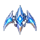
Compara los contornos sobre un fondo claro y uno oscuro. Las zonas exteriores a cada nave deben ser transparentes, sin restos de otra nave ni manchas de fondo. El tamaño se adapta al cuadro de inspección.

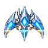
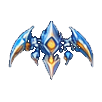
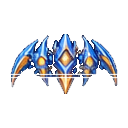
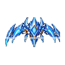
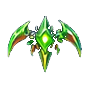
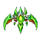
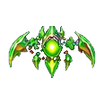
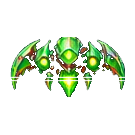
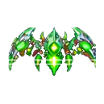
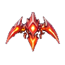
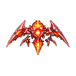
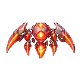
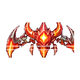
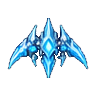
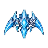
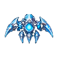
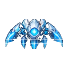
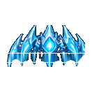
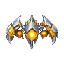
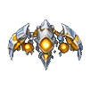
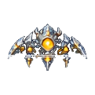
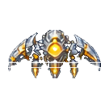
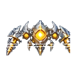
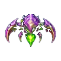
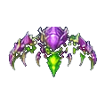
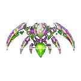
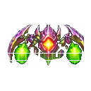
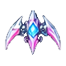
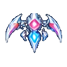
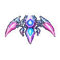
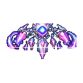
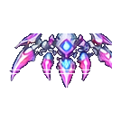
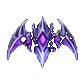
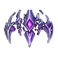
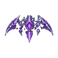
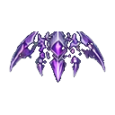
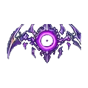
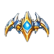
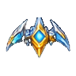
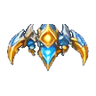
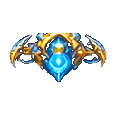
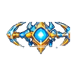
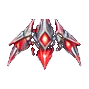
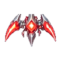
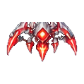
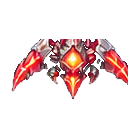
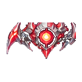